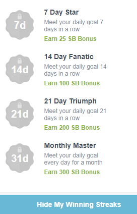

Sondaggi a pagamento

Clicca sulle immagini per ulteriori informazioni.

Home - Inizio:
Questa sezione corrisponde alla scena che vedremo ogni volta che entriamo nel nostro account, in cui possiamo vedere i modi popolari per guadagnare SB e altri modi per generare SB, come sondaggi e offerte.

Shop - Aggiungi al carrello:
Con questa opzione accediamo alla sezione di cashback, offerte e coupon; tramite il cashback saremo in grado di ottenere SB per effettuare acquisti on-line, soggetti ai termini e condizioni di ogni negozio, per poter vedere questi termini e ulteriori informazioni è sufficiente mettere il mouse sull'offerta in questione per poter vedere le sue informazioni extra; va notato che possiamo filtrare i risultati attraverso il menu delle categorie anche sul lato sinistro; finalmente troveremo le offerte e i coupon che ci permettono di ottenere sconti tramite codici e anche cashback.


Watch - Vedere:
Qui possiamo accedere a presentazioni, singoli video o elenchi di video, per i quali otteniamo bonus quando li vediamo, che hanno bisogno di trascorrere 45 secondi in ogni video per poter passare al prossimo.

Answer - Rispondi:
Qui potremo accedere a tutte le sondaggi disponibili all'epoca, indicando il tempo approssimativo da investire per rispondere ad un sondaggio e l'importo del bonus SB, va segnalato che se non è possibile rispondere ad un questionario di squalifica, vale a dire non si inserisce nel profilo del soggetto di studio, saremo pagati 1 SB, con un massimo di 10 SB per squalifica al giorno; se avete dubbi in questo argomento, vi invitiamo a rivedere ulteriormente la sezione

Discover - Scoprire:
In questa sezione possiamo ottenere SB come bonus quando si registra o si sottoscrive diversi servizi, alcuni pagamenti gratuiti e altri; è inoltre possibile ottenere ulteriori informazioni da ciascuna offerta mettendo il mouse sull'offerta specifica.


Search - Ricerca:
Per usufruire della barra di ricerca di Swagbucks possiamo ricevere SB come bonus, ottenendo per la prima volta 20 SB per effettuare una ricerca tramite Swagbucks; nelle altre ricerche il bonus sarà casuale, a volte ottenere un bonus e altri senza ottenere un bonus; anche in questa sezione ci viene offerto l'opzione per impostare il motore di ricerca Swagbucks come nostro motore di ricerca di scelta.


Play - Gioca:
Pudiendo ganar SB por cada monto de dinero que gastemos en un juego online, así como poder jugar minijuegos de Swagbucks con los cuales podremos ganar hasta 10 SB.


C'è anche un bar in alto a Swagbucks, come potete vedere nell'immagine seguente attraverso la quale avremo accesso a:

Search the web & earn - Cerca nel web e vinci:
Permettendoci di ricercare attraverso il motore di ricerca Swagbucks e come sopra spiegato, possiamo vincere SB in cambio.
SWAG code - Codice SWAG:
In questo spazio possiamo introdurre codici pubblicati in diversi luoghi al fine di scambiare ricompense; per informazioni sui pagatori ci viene presentato il link

Daily goal - Obiettivo giornaliero:
Qui possiamo accedere a un bonus extra se vinciamo una certa quantità di SB al giorno, facilmente raggiungibile, che l'obiettivo quotidiano viene riavviato ogni giorno e facendo clic su
 |
 |
Refer & Earn - Riferisci e guadagna:
Questa sezione corrisponde al sistema di referral, attraverso il quale puoi invitare i tuoi amici a partecipare a Swagbucks; per essere un po 'esteso e per la tua comodità, parleremo del sistema di riferimento qui sotto.

Inbox - Vassoio:
Attraverso la quale saremo informati di nuovi sondaggi, offerte e presentazioni, nonché il loro tempo rimanente per vincere.

Come un extra puoi anche notare sul lato sinistro dello schermo, quando si inserisce una qualsiasi delle sezioni diverse, siano essi i video, le sondaggi o le offerte; un elenco di cose da fare, per cui possiamo ricevere un bonus completando almeno 6 delle attività di lista, oltre a ottenere un bonus quando si completano le 8 attività.

Infine per essere in grado di redimere gli SB, possiamo accedere a questa sezione attraverso 3 link; per la prima si dovrebbe notare che, ad esempio, quando si entra in una delle sezioni, supponiamo la sezione delle sondaggi, vedrai la scena seguente alla sinistra; quando si posiziona il mouse sull'opzione, verrà visualizzato il seguente menu, con le stesse opzioni viste prima ma con l'opzione extra
 |
 |
Gli altri collegamenti si trovano in un menu secondario, che si trova anche a sinistra e il menu a discesa che appare quando si posiziona il mouse sull'equilibrio; in entrambi i casi, per scambiare le SB che dobbiamo fare clic su
 |
 |
In questo modo avremo i seguenti modi per scambiare l'SB, come carte regalo, carte PayPal per il valore di 25 USD, 50 USD, 100 USD e 250 USD e ci permetterà di offrire la meravigliosa opzione per contribuire a una fondazione caritatevole.

Se la tua intenzione è di richiedere il pagamento tramite PayPal, devi cliccare sulla carta, in questo caso, 25 USD, quindi clicca su Redeem e infine deve inserire il tuo nome e cognome, dove ci viene chiesto di assicurarci che il nostro nome e il cognome corrispondono al nome e al cognome del nostro conto PayPal così come hanno verificato tale account; anche per informarci che il pagamento sarà effettuato in un periodo di tempo compreso tra 10 e 14 giorni lavorativi.


Ora è il sistema di ritorno a referral, come sapete, per accedervi è necessario fare clic su

In questo modo puoi invitare i tuoi amici tramite una e-mail, anche attraverso un collegamento unico e personale; anche la pubblicazione che collega attraverso reti sociali differenti o utilizzando banner pubblicitari; tutto a vostra scelta; dovete stare attenti a non spam.


Quali sono le domande di pre-qualificazione?
Queste sono le domande che ci fanno in un sondaggio al fine di determianr se siamo buoni soggetti di studio per un'indagine specifica; che è, siamo in grado di entrare in un sondaggio, noi fare un paio di domande e risposte come noi diamo, siamo in grado di accedere al sondaggio o no; qui vale anche quello che hai detto prima, essere una persona del consumo, avremo più propabilidad possono accedere al sondaggio, tuttavia, spesso non possiamo qualificare sondaggi essendo questo come normale, perché non preoccuparsi o scoraggiarsi. Si consiglia anche la pazienza e la maggior parte delle volte le domande di prequalificazione sono le stesse domande che si compilato nel tuo profilo, questo perché i clienti, vale a dire quelle che svolgono le sondaggi condotta cerca di coerenza nelle risposte e non sono prese per illuminare le informazioni che forniamo; Infine vale la pena notare che le domande di pre-qualificazione non prendono mai più di 5 minuti per rispondere a come sarebbe ingiusto spendere 30 minuti domande di preselezione per poi essere squalificato.
Se non vivo in paesi accettati, posso utilizzare VPN?
Non lo consiglio perché se utilizzi un servizio VPN a pagamento o gratuito, utilizzerai un indirizzo IP di un paese accettato, finché tutto va bene, il problema è che non sarai l'unico a utilizzare questo nuovo indirizzo IP, visto che Se non vivo in paesi accettati, posso usare VPN? Sarà molto più persone con account in Swagbucks utilizzando lo stesso indirizzo IP. Beh possiamo dire che sì si può utilizzare VPN ma saremmo solo approfittando delle tue buone intenzioni, tuttavia vi invitiamo a continuare a navigare my-money.online, certamente trovare qualcosa che ti piace e che puoi fare con la sicurezza totale.
Non ho conto PayPal
Nessun problema, la prima cosa che devi fare è andare alla pagina PayPal, non forniamo il collegamento per la tua sicurezza, una volta lì, in alto troverai le seguenti opzioni:

Qui, dopo aver fatto clic su

Più tardi ti verrà chiesto il tuo genere e i tuoi gusti e poi i tuoi dati personali e alla fine ti chiederanno se vuoi associare la tua carta bancaria, potendo rinviare se vuoi farlo facendo clic su